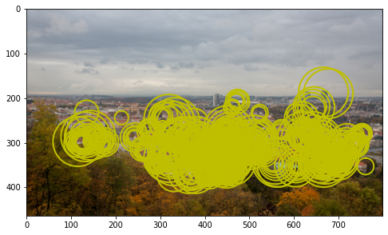
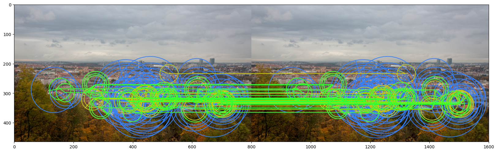
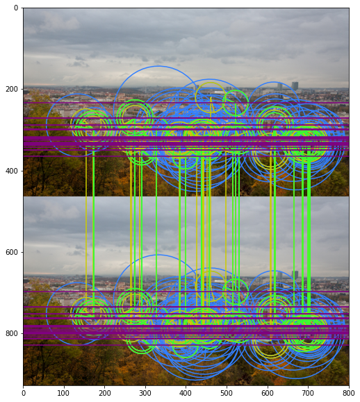
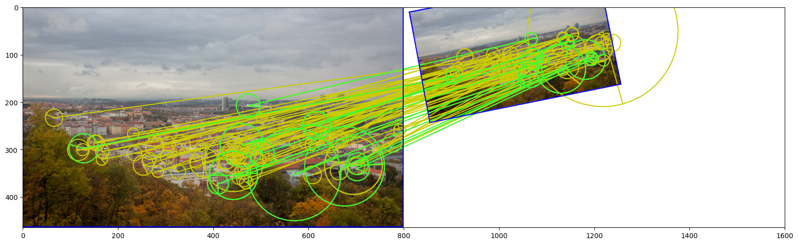
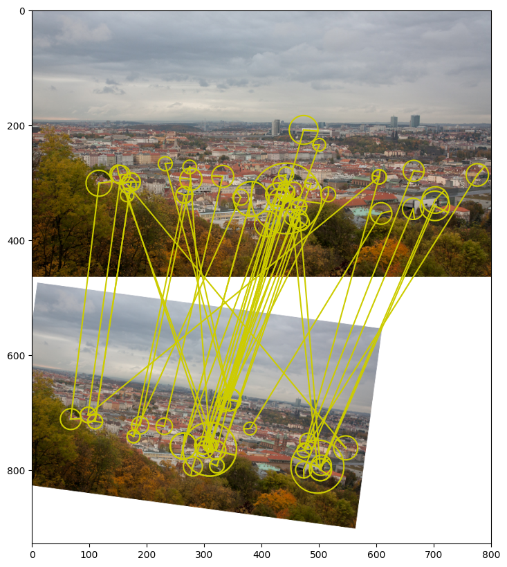
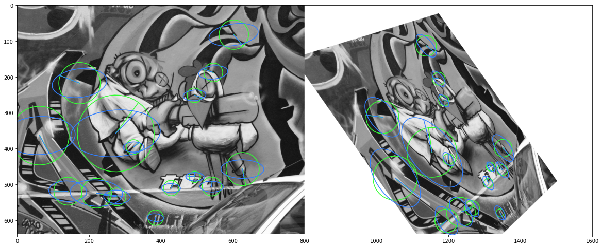
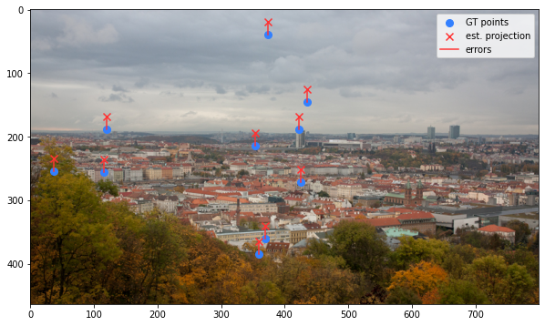
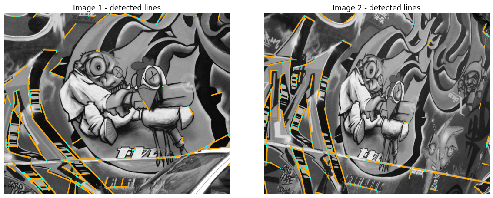
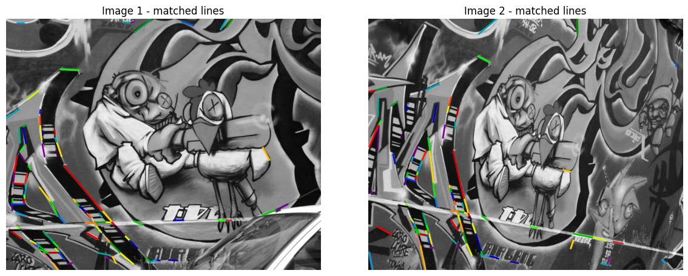
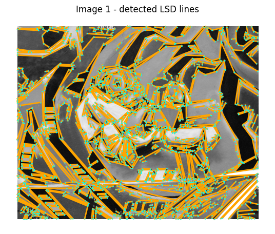

from kornia_moons.feature import (
laf_from_opencv_kpts,
opencv_kpts_from_laf,
laf_from_opencv_ORB_kpts,
laf_from_opencv_SIFT_kpts)Viz
Module for visualization functions
visualize_LAF
visualize_LAF (img, LAF, img_idx=0, color='r', linewidth=1, draw_ori=True, fig=None, ax=None, return_fig_ax=False, **kwargs)
Let’s detect ORB keypoints and convert them to and from OpenCV
img = cv2.cvtColor(cv2.imread('data/strahov.png'), cv2.COLOR_BGR2RGB)
det = cv2.ORB_create(500)
kps, descs = det.detectAndCompute(img, None)
out_img = cv2.drawKeypoints(img, kps, None, flags=cv2.DRAW_MATCHES_FLAGS_DRAW_RICH_KEYPOINTS)
plt.imshow(out_img)<matplotlib.image.AxesImage>
img = cv2.cvtColor(cv2.imread('data/strahov.png'), cv2.COLOR_BGR2RGB)
det = cv2.ORB_create(500)
kps, descs = det.detectAndCompute(img, None)
lafs, r = laf_from_opencv_kpts(kps, 1.0, with_resp=True)
fig=plt.figure()
visualize_LAF(image_to_tensor(img, False), lafs, 0, 'y', draw_ori=False,figsize=(8,6), linewidth=2)<Figure size 432x288 with 0 Axes>
img = cv2.cvtColor(cv2.imread('data/strahov.png'), cv2.COLOR_BGR2RGB)
det = cv2.ORB_create(500)
kps, descs = det.detectAndCompute(img, None)
lafs, r = laf_from_opencv_kpts(kps, 1.0, with_resp=True)
kps_back = opencv_kpts_from_laf(lafs, 1.0, r)
out_img = cv2.drawKeypoints(img, kps_back, None, flags=cv2.DRAW_MATCHES_FLAGS_DRAW_RICH_KEYPOINTS)
plt.imshow(out_img)<matplotlib.image.AxesImage>
OpenCV uses different conventions for the local feature scale.
E.g. to get equivalent kornia LAF from ORB keypoints, one should you mrSize = 0.5, while for SIFT – 6.0. The orientation convention is also different for kornia and OpenCV.
epilines_to_start_end_points
epilines_to_start_end_points (epi, h, w)
draw_LAF_matches
draw_LAF_matches (lafs1, lafs2, tent_idxs, img1, img2, inlier_mask=None, draw_dict={'inlier_color': (0.2, 1, 0.2), 'tentative_color': (0.8, 0.8, 0), 'feature_color': (0.2, 0.5, 1), 'vertical': False}, Fm:Optional[<built- infunctionarray>]=None, H:Optional[<built- infunctionarray>]=None, fig=None, ax:Optional=None, return_fig_ax=False)
This function draws LAFs, tentative matches, inliers epipolar lines (if F is provided), and image1 corners reprojection into image 2 (if H is provided)
We will visualize ORB features (blue), tentative matches (yellow) and inliers(greenish)
import numpy as np
det = cv2.ORB_create(100)
img1_fname = 'data/strahov.png'
kps1, descs1 = det.detectAndCompute(cv2.imread(img1_fname,0), None)
lafs1 = laf_from_opencv_ORB_kpts(kps1)
idxs = torch.stack([torch.arange(50),torch.arange(50)], dim=-1)
fig, ax = draw_LAF_matches(lafs1, lafs1, idxs,
img1_fname,img1_fname,
[True if i%2 == 0 else False for i in range(len(idxs))],
draw_dict={"inlier_color": (0.2, 1, 0.2),
"tentative_color": (0.8, 0.8, 0),
"feature_color": (0.2, 0.5, 1),
"vertical": False}, return_fig_ax=True)
Now let’s try with epipolar matrix for the translation. Inliers should lie on the horizontal epipolar lines
Fmat = np.array([[0., 0., 0.],
[0, 0, -1],
[0, 1, 0]])
draw_LAF_matches(lafs1, lafs1, idxs,
img1_fname,img1_fname,
[True if i%2 == 0 else False for i in range(len(idxs))],
draw_dict={"inlier_color": (0.2, 1, 0.2),
"tentative_color": (0.8, 0.8, 0),
"feature_color": (0.2, 0.5, 1),
"vertical": True}, Fm = Fmat)libpng warning: iCCP: known incorrect sRGB profile
libpng warning: iCCP: known incorrect sRGB profile
Now we will transform the image, match it, find the homography and visualize it.
import numpy as np
det = cv2.SIFT_create(100)
img1_fname = 'data/strahov.png'
img1 = cv2.cvtColor(cv2.imread(img1_fname), cv2.COLOR_BGR2RGB)
Hgt = np.array([[0.5, 0.1, 10],
[-0.1, 0.5, 10],
[0, 0, 1]])
img2 = cv2.warpPerspective(img1, Hgt, img1.shape[:2][::-1], borderValue=(255,255,255))
kps1, descs1 = det.detectAndCompute(img1, None)
lafs1 = laf_from_opencv_SIFT_kpts(kps1)
kps2, descs2 = det.detectAndCompute(img2, None)
lafs2 = laf_from_opencv_SIFT_kpts(kps2)
match_dists, match_idxs = kornia.feature.match_snn(torch.from_numpy(descs1).float(),
torch.from_numpy(descs2).float(), 0.98)
H, mask = cv2.findHomography(kornia.feature.get_laf_center(lafs1[:,match_idxs[:,0]]).detach().cpu().numpy().reshape(-1,2),
kornia.feature.get_laf_center(lafs2[:,match_idxs[:,1]]).detach().cpu().numpy().reshape(-1,2),
cv2.USAC_MAGSAC, 0.5)
draw_LAF_matches(lafs1, lafs2, match_idxs,
img1, img2,
mask,
draw_dict={"inlier_color": (0.2, 1, 0.2),
"tentative_color": (0.8, 0.8, 0),
"feature_color": None,
"vertical": False}, H = H)
And the same with fundamental matrix
import numpy as np
det = cv2.SIFT_create(75)
img1_fname = 'data/strahov.png'
img1 = cv2.cvtColor(cv2.imread(img1_fname), cv2.COLOR_BGR2RGB)
Hgt = np.array([[0.75, -0.1, 10],
[0.1, 0.75, 10],
[0, 0, 1]])
img2 = cv2.warpPerspective(img1, Hgt, img1.shape[:2][::-1], borderValue=(255,255,255))
kps1, descs1 = det.detectAndCompute(img1, None)
lafs1 = laf_from_opencv_SIFT_kpts(kps1)
kps2, descs2 = det.detectAndCompute(img2, None)
lafs2 = laf_from_opencv_SIFT_kpts(kps2)
match_dists, match_idxs = kornia.feature.match_snn(torch.from_numpy(descs1).float(),
torch.from_numpy(descs2).float(), 0.95)
Fmat, mask = cv2.findFundamentalMat(kornia.feature.get_laf_center(lafs1[:,match_idxs[:,0]]).detach().cpu().numpy().reshape(-1,2),
kornia.feature.get_laf_center(lafs2[:,match_idxs[:,1]]).detach().cpu().numpy().reshape(-1,2),
cv2.USAC_MAGSAC, 0.5)
draw_LAF_matches(lafs1, lafs2, match_idxs,
img1, img2,
mask,
draw_dict={"inlier_color": None,#(0.2, 1, 0.2),
"tentative_color": (0.8, 0.8, 0),
"feature_color": None,
"vertical": True})
draw_LAF_matches_from_result_dict
draw_LAF_matches_from_result_dict (result_dict, img1, img2, draw_dict={'inlier_color': (0.2, 1, 0.2), 'tentative_color': (0.8, 0.8, 0), 'feature_color': (0.2, 0.5, 1), 'vertical': False})
draw_LAF_inliers_perspective_repjojected
draw_LAF_inliers_perspective_repjojected (lafs1, lafs2, tent_idxs, img1, img2, inlier_mask=None, draw_dict={'inlier_color': (0.2, 1, 0.2), 'reprojected_color': (0.2, 0.5, 1), 'vertical': False}, H:<built-infunctionarray>=None, fig=None, ax:Optional=None, return_fig_ax=False)
This function draws tentative matches and inliers given the homography H
det = cv2.SIFT_create(500)
img1_fname = 'data/img1.ppm'
img2_fname = 'data/img4.ppm'
img1 = cv2.cvtColor(cv2.imread(img1_fname), cv2.COLOR_BGR2RGB)
img2 = cv2.cvtColor(cv2.imread(img2_fname), cv2.COLOR_BGR2RGB)
Hgt = np.loadtxt('data/H1to4p')
img2 = cv2.warpPerspective(img1, Hgt, img1.shape[:2][::-1], borderValue=(255,255,255))
kps1, descs1 = det.detectAndCompute(img1, None)
lafs1 = laf_from_opencv_SIFT_kpts(kps1)
kps2, descs2 = det.detectAndCompute(img2, None)
lafs2 = laf_from_opencv_SIFT_kpts(kps2)
match_dists, match_idxs = kornia.feature.match_snn(torch.from_numpy(descs1).float(),
torch.from_numpy(descs2).float(), 0.98)
H, mask = cv2.findHomography(kornia.feature.get_laf_center(lafs1[:,match_idxs[:,0]]).detach().cpu().numpy().reshape(-1,2),
kornia.feature.get_laf_center(lafs2[:,match_idxs[:,1]]).detach().cpu().numpy().reshape(-1,2),
cv2.USAC_MAGSAC, 0.5)
draw_LAF_inliers_perspective_repjojected(lafs1, lafs2, match_idxs,
cv2.cvtColor(cv2.cvtColor(img1,cv2.COLOR_RGB2GRAY), cv2.COLOR_GRAY2RGB),
cv2.cvtColor(cv2.cvtColor(img2,cv2.COLOR_RGB2GRAY), cv2.COLOR_GRAY2RGB),
mask, H = H)
draw_epipolar_errors_in_single_image
draw_epipolar_errors_in_single_image (kp1:<built-infunctionarray>, kp2:<built-infunctionarray>, Fm1to2:<built-infunctionarray>, img, draw_dict={'error_color': (1, 0.2, 0.2), 'feature_color': (0.2, 0.5, 1), 'figsize': (10, 10), 'markersize': 8}, img_index:int=2, ax:Optional=None, title=None)
This function draws epipolar errors in single image
kps1 = np.random.randint(0, 450, (10, 2)).astype(np.float32)
kps2 = kps1 + np.array([20., 20.]).astype(np.float32)
timg = image_to_tensor(cv2.cvtColor(cv2.imread('data/strahov.png'), cv2.COLOR_BGR2RGB), False).float()/255.
Fm = torch.tensor([[0, 0, 0],
[0, 0, 1],
[0, -1, 0.]]).float()
ax = draw_epipolar_errors_in_single_image(kps1, kps2, Fm, timg)
plot_color_line_matches
plot_color_line_matches (lines, lw=2, indices=(0, 1))
Plot line matches for existing images with multiple colors. Args: lines: list of ndarrays of size (N, 2, 2). order: […, 0] is y, […, 0] is x lw: line width as float pixels. indices: indices of the images to draw the matches on.
plot_lines
plot_lines (lines, line_colors='orange', point_colors='cyan', ps=4, lw=2, indices=(0, 1))
Plot lines and endpoints for existing images. Args: lines: list of ndarrays of size (N, 2, 2). order: […, 0] is y, […, 0] is x colors: string, or list of list of tuples (one for each keypoints). ps: size of the keypoints as float pixels. lw: line width as float pixels. indices: indices of the images to draw the matches on.
plot_images
plot_images (imgs, titles=None, cmaps='gray', dpi=100, size=6, pad=0.5)
Plot a set of images horizontally. Args: imgs: a list of NumPy or PyTorch images, RGB (H, W, 3) or mono (H, W). titles: a list of strings, as titles for each image. cmaps: colormaps for monochrome images.
We will visualize line segments from kornia SOLD2
timg1 = image_to_tensor(cv2.cvtColor(cv2.imread('data/img1.ppm'), cv2.COLOR_BGR2RGB), False).float()/255.
timg2 = image_to_tensor(cv2.cvtColor(cv2.imread('data/img3.ppm'), cv2.COLOR_BGR2RGB), False).float()/255.
sold2 = kornia.feature.SOLD2(pretrained=True, config=None)
timg1_gray = kornia.color.rgb_to_grayscale(timg1)
timg2_gray = kornia.color.rgb_to_grayscale(timg2)
with torch.inference_mode():
outputs = sold2(torch.cat([timg1_gray, timg2_gray], dim=0))
line_seg1 = outputs["line_segments"][0]
line_seg2 = outputs["line_segments"][1]
desc1 = outputs["dense_desc"][0]
desc2 = outputs["dense_desc"][1]
imgs_to_plot = [tensor_to_image(timg1_gray), tensor_to_image(timg2_gray)]
lines_to_plot = [line_seg1.numpy(), line_seg2.numpy()]
plot_images(imgs_to_plot, ["Image 1 - detected lines", "Image 2 - detected lines"])
plot_lines(lines_to_plot, ps=3, lw=2, indices={0, 1})
with torch.inference_mode():
matches = sold2.match(line_seg1, line_seg2, desc1[None], desc2[None])
valid_matches = matches != -1
match_indices = matches[valid_matches]
matched_lines1 = line_seg1[valid_matches]
matched_lines2 = line_seg2[match_indices]
plot_images(imgs_to_plot, ["Image 1 - matched lines", "Image 2 - matched lines"])
plot_color_line_matches([matched_lines1, matched_lines2], lw=2)

import cv2
img_gray = cv2.imread('data/img1.ppm', 0)
lsd = cv2.createLineSegmentDetector(0)
lines = lsd.detect(img_gray)[0].reshape(-1, 2, 2)
lines = lines[..., ::-1]
# OpenCV LSD detector return xy order
plot_images([img_gray], ["Image 1 - detected LSD lines"])
plot_lines([lines], ps=3, lw=2, indices={0})